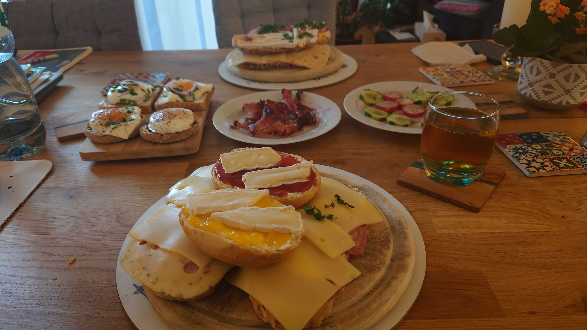

Eggfast 🥚

Beschreibung
Das perfekte proteinreiche Frühstück für alle, die schnell und gesund in den Tag starten wollen! Eggfast ist nicht nur super einfach zu machen, sondern auch unglaublich vielseitig. Ob als schnelles Frühstück vor der Arbeit oder als Post-Workout-Meal - diese Ei-Variationen geben dir die Energie, die du brauchst.
Zutaten 🛒
- 4 frische Eier
- 2 EL Butter oder Olivenöl
- Salz und frisch gemahlener Pfeffer
- 2 Scheiben Vollkornbrot (optional)
- 1 Avocado (optional)
- 1 Handvoll Babyspinat
- 50g geriebener Käse (Cheddar oder Gouda)
- 1 TL Paprika (süß)
- Schnittlauch oder Petersilie zum Garnieren
- 1 kleine Tomate (optional)
Zubereitung 👨🍳
- Vorbereitung: Alle Zutaten bereitstellen. Schnittlauch fein hacken, Tomate in kleine Würfel schneiden.
- Pfanne erhitzen: Butter oder Olivenöl in einer beschichteten Pfanne bei mittlerer Hitze schmelzen.
- Spinat hinzufügen: Babyspinat in die Pfanne geben und kurz zusammenfallen lassen (1-2 Min).
- Eier aufschlagen: Eier direkt in die Pfanne aufschlagen oder vorher in einer Schüssel verquirlen.
- Würzen: Mit Salz, Pfeffer und Paprika würzen. Käse darüber streuen.
- Stocken lassen: Bei mittlerer Hitze stocken lassen (3-4 Min). Optional umrühren für Rührei-Style.
- Servieren: Mit Schnittlauch und Tomatenwürfeln garnieren. Optional mit Toast servieren.
Tipps & Variationen 💡
- Protein-Boost: Füge gekochte Quinoa oder Haferflocken hinzu
- Mediterran: Mit getrockneten Tomaten, Oliven und Feta-Käse
- Mexikanisch: Mit Jalapeños, Cheddar und einem Klecks Joghurt
- Timing-Tipp: Alle Zutaten vorher vorbereiten - dann geht's super schnell
- Meal-Prep: Kann vorbereitet und aufgewärmt werden
- Low-Carb: Einfach das Brot weglassen für eine kohlenhydratarme Version